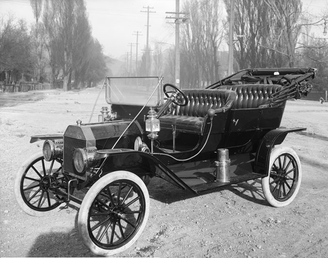

THE RUNABOUT NEWS NETWORK

Oh boy, get ready to get rid of your old horse drawn carriage and march into the future with a new “automobile”!
The Ford Motor company is looking to shake things up for the average person. As I’m sure you're aware, mobile machines for personal transport have been around for a while but only for the really wealthy among us. Well the Ford company looks to be changing that with their “Model T” designed for personal and family use for an affordable price. Here is what founder Henry Ford had to say about the matter: “I will build a car for the great multitude. It will be large enough for the family, but small enough for the individual to run and care for. It will be constructed of the best materials, by the best men to be hired, after the simplest designs that modern engineering can devise. But it will be so low in price that no man making a good salary will be unable to own one – and enjoy with his family the blessing of hours of pleasure in God’s great open spaces.”. All the beezers in the know are going to want one. For more updates stay subscribed to this newspaper.